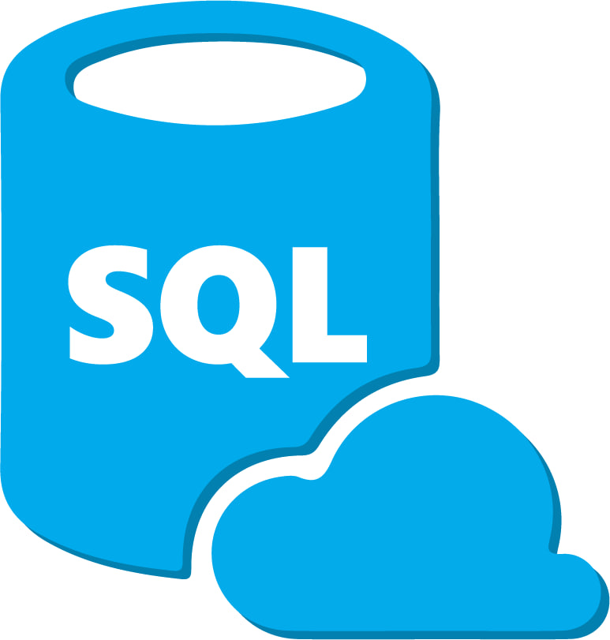
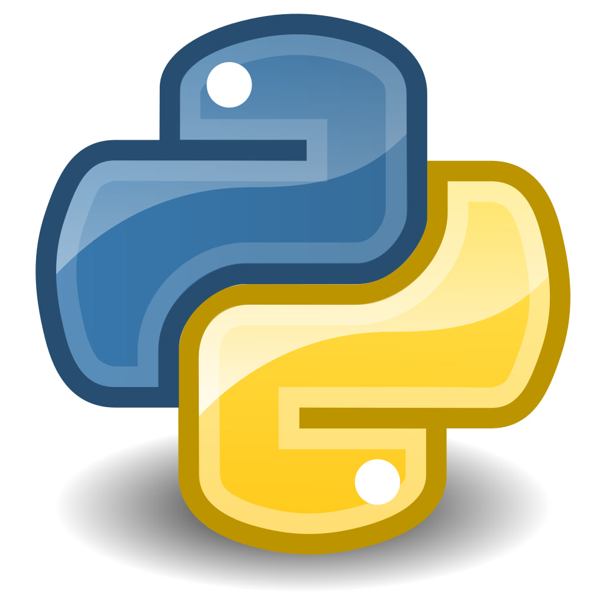
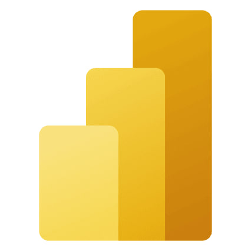
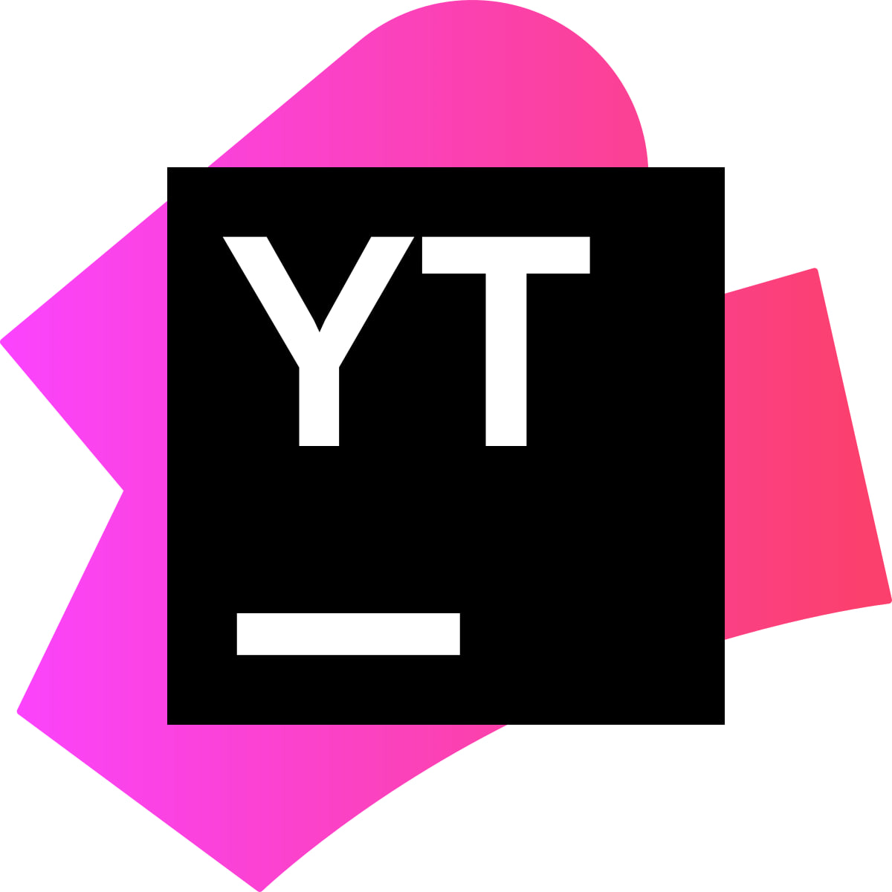

Ярослав Сулейменов
Project Manager / Business Analyst
Более 10 лет опыта в B2B-сегменте, с фокусом на концепции IBP, сквозном планировании, анализе бизнес-процессов и подготовке управленческой отчётности.
Узнать больше
Project Manager / Business Analyst
Более 10 лет опыта в B2B-сегменте, с фокусом на концепции IBP, сквозном планировании, анализе бизнес-процессов и подготовке управленческой отчётности.
Узнать больше
Глубокое знание архитектуры моделей, финансового моделирования и подготовки данных. Владение SQL, Python и Power BI для анализа и визуализации.
10+ лет опыта в B2B продажах и управлении клиентами. Фокус на ABC/XYZ-анализе, контроле KPI (OSA, Shelf Share) и увеличении рентабельности контрактов.
Опыт управления задачами через YouTrack, координации presale-команд и проведения обучающих вебинаров/курсов для junior-специалистов и студентов.
Реальные демонстрации навыков в OLAP-моделировании, аналитике и создании обучающего контента.
Самостоятельно разработанный и прочитанный курс для студентов университета МУИТ. Содержит материалы по архитектуре, моделированию и финансовому анализу.
Анализ на Python (Pandas, SciPy, Matplotlib) влияния пуш-уведомлений на ключевые метрики.

SQL

Python

Power BI
CasPlan

YouTrack
Excel
Карагандинский экономический университет Казпотребсоюза (2010)
Специальность: Правовое регулирование в сфере экономики
Оптимакрос (Optimacros) | Май 2025 – Наст. время
Forte Holding GmbH | Июнь 2023 – Май 2025
Русский свет ООО | Сентябрь 2016 – Май 2023
ТОО «220 VOLT (ИП Ашимова М.М.) | Февраль 2014 – Сентябрь 2016